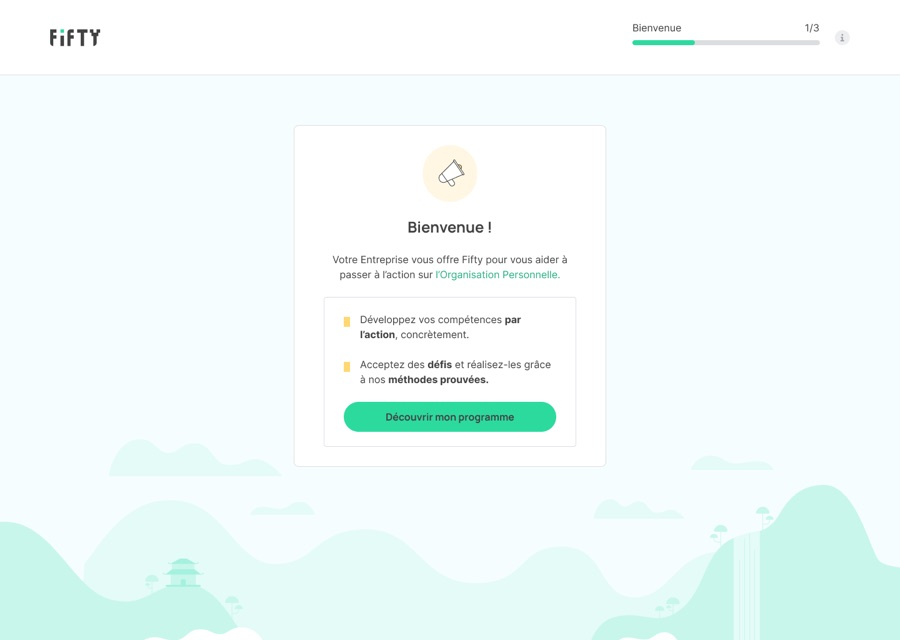
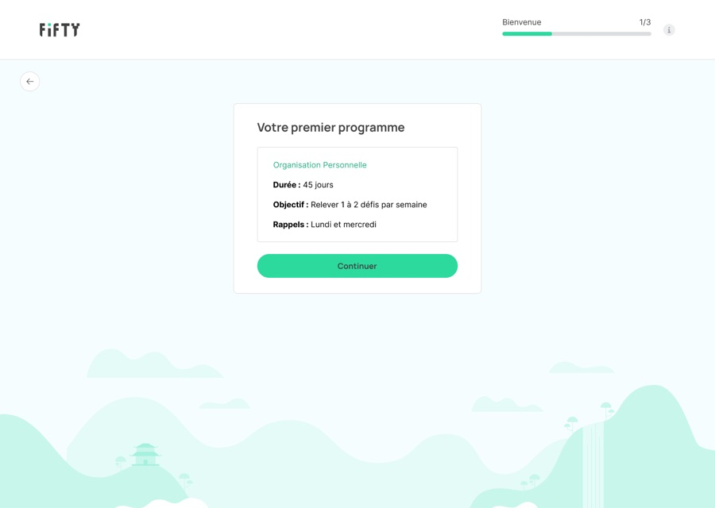
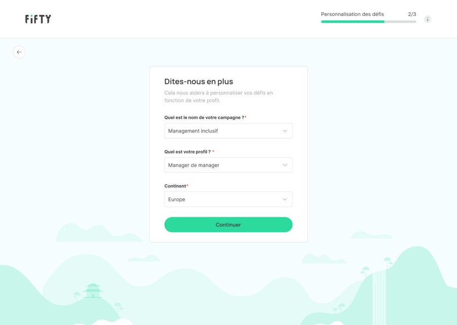
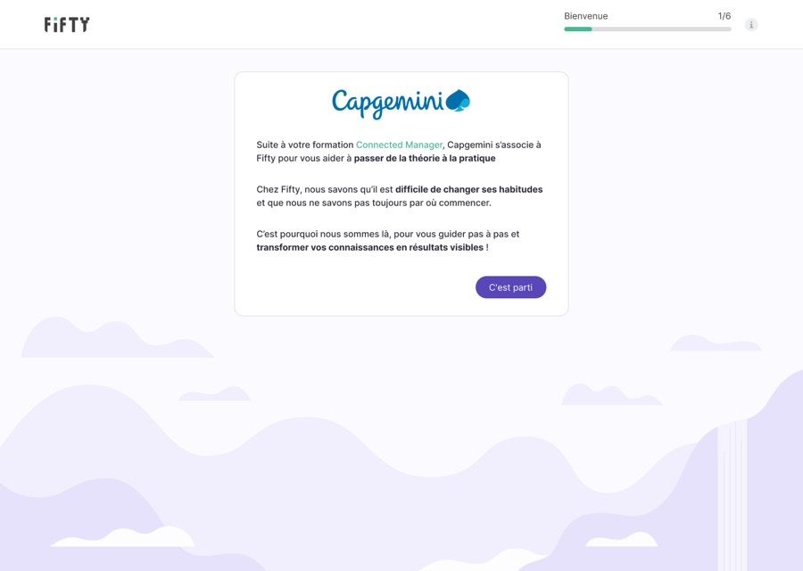
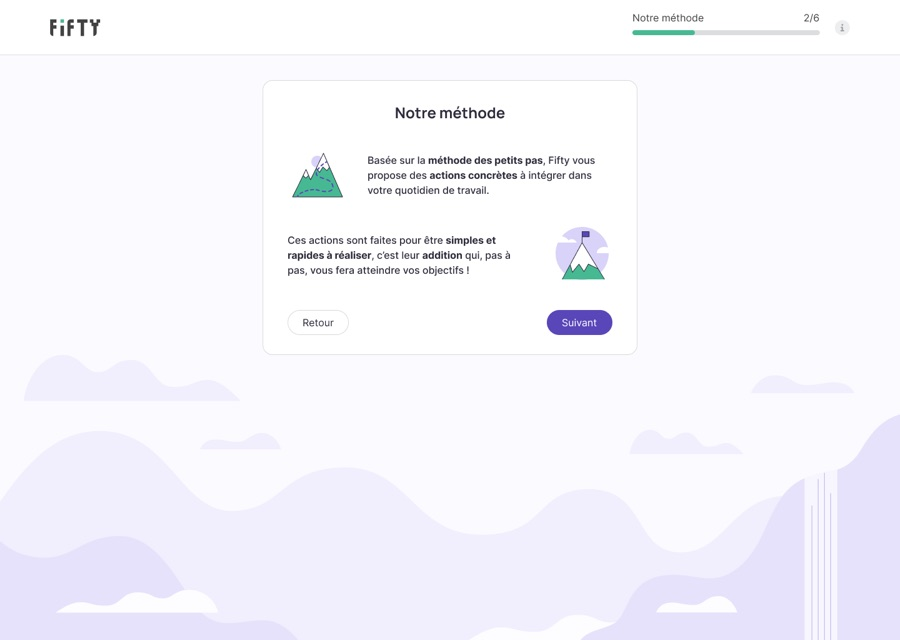
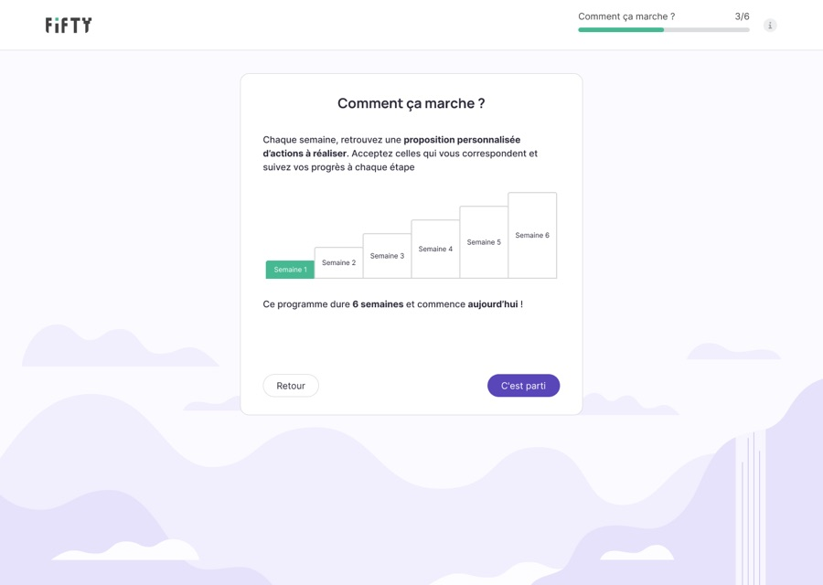
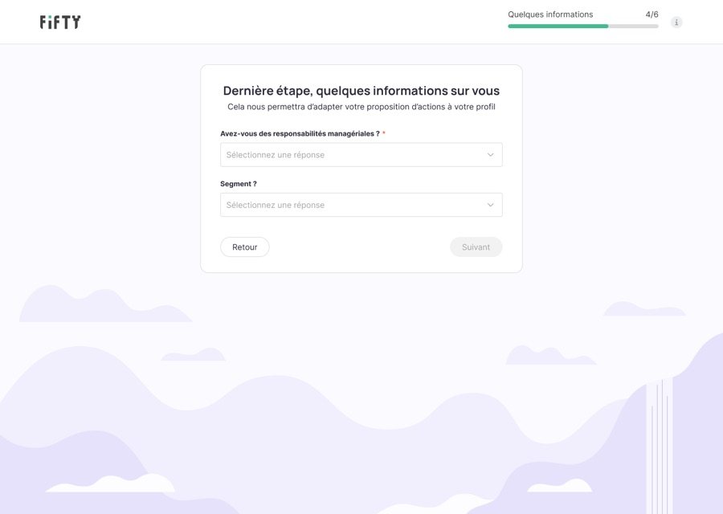
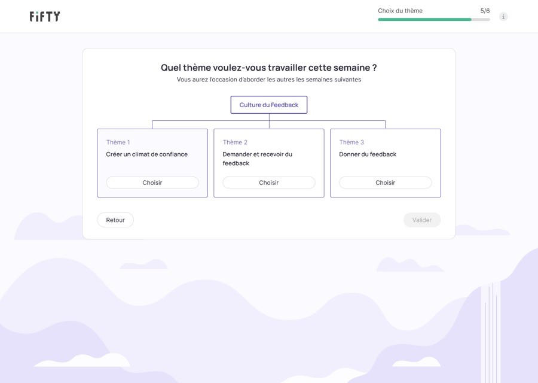
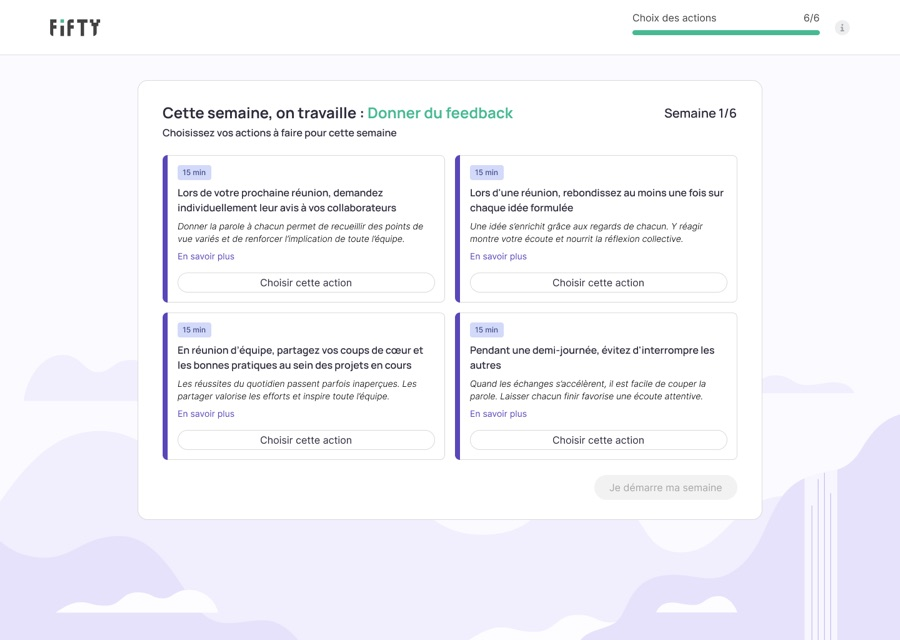
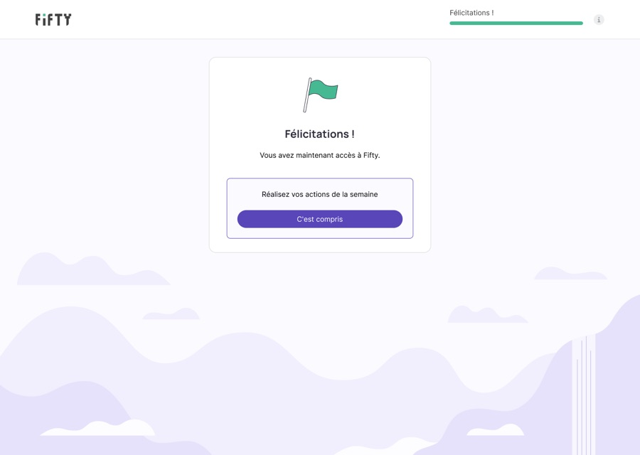

Faire passer de 40 % à 52 % les utilisateurs en usage soutenu
01 — CONTEXTE & OBJECTIFS
Fifty aide les entreprises à transformer les formations en actions concrètes du quotidien. Ce projet est la refonte de l’onboarding de la plateforme qui permet aux collaborateurs de choisir leurs actions à réaliser.
Ce sont les RH qui achètent la solution, et les collaborateurs qui l’utilisent : l’onboarding doit convaincre des personnes qui n’ont pas choisi l’outil.
- 01Clarifier la proposition de valeur
- 02Améliorer le taux de complétion
- 03Améliorer l’activation utilisateur
02 — DISCOVERY
Données quantitatives
Avec Amplitude, nous savons que la complétion de l’onboarding chute fortement depuis avril 2024.
1 à 2 actions / semainePratique soutenue
plus de 2 actions / semaine
Données qualitatives
Nous n’avons pas mené d’entretiens dédiés à l’onboarding. Pour comprendre les chiffres, nous nous sommes appuyés sur les retours remontés par les CSM :
« Les utilisateurs ne comprennent pas pourquoi ils arrivent sur Fifty. »
« Parfois, il y a une très faible communication en interne autour de Fifty. »
Hypothèses
Les utilisateurs ne comprennent pas le concept du produit
Le drop avant même le classement des thèmes suggère une difficulté de compréhension avant la phase d’engagement.
Le classement des thèmes arrive trop tôt
Les utilisateurs doivent prendre des décisions avant même d’avoir compris la valeur du produit.
Les utilisateurs n’ont pas d’actions proposées
Les utilisateurs n’ont pas d’étape d’engagement concret avec le produit après la phase de découverte passive.
03 — IDÉATION
Flow existant



Décisions clés
À partir de l’analyse du flow existant, de nos hypothèses et des retours des CSM, nous faisons quatre choix :
L’arrivée sur Fifty se fait sans transition. La première étape de l’onboarding n’est pas assez explicite concernant le lien entre l’entreprise cliente et Fifty.
Donner plus de contexte aux utilisateurs sur leur arrivée sur Fifty pour qu’ils comprennent plus facilement pourquoi ils se retrouvent sur cet outil.
Améliorer la transition entre la communication de l’entreprise et l’expérience produit et ainsi renforcer la confiance des utilisateurs dès les premières secondes.
Le concept de Fifty est expliqué de manière abstraite. Il n’y a qu’une étape dédiée au concept de Fifty, ce qui n’est pas assez pour que l’utilisateur comprenne concrètement de quoi il s’agit.
Ajouter des étapes pour expliquer à l’utilisateur à quoi va lui servir l’outil, comment il fonctionne et les bénéfices qu’il va en tirer.
Réduire les abandons avant même d’atteindre le premier choix à faire de l’utilisateur.
Le « choix » du thème n’est pas clair. L’utilisateur ne choisit pas vraiment un thème, il les priorise, ce qui fera plus ou moins ressortir des actions. Cet effet n’est pas explicité.
Faire faire un vrai choix à l’utilisateur concernant un thème, en lui expliquant que les autres thèmes seront vus les semaines suivantes.
Réduire les incompréhensions et augmenter la confiance de l’utilisateur.
Aucune action n’est choisie lors de l’onboarding. On ne pousse pas l’utilisateur à choisir une action, ce qui ne lui permet pas de se lancer dans l’utilisation du produit.
Ajouter une étape où l’utilisateur peut visualiser différentes actions et choisir celles qu’il souhaite réaliser.
Augmenter l’activation et l’engagement des utilisateurs en les encourageant à sélectionner des actions et à les réaliser pendant la semaine en cours.
Flow retravaillé







04 — LIVRAISON & ÉVALUATION
Impact & résultats à J+30
Faute de temps pour tester avec des utilisateurs, nous avons validé le flow en interne, puis mesuré son impact 30 jours après le déploiement.
La complétion remonte à 70 %, mais reste sous son niveau de février (72,8 %). Nous n’avons pas identifié ce qui a provoqué la chute d’avril : la refonte a corrigé des frictions réelles, sans forcément répondre à la cause de cette baisse.
Le nouveau flow compte deux étapes de plus, et pourtant la complétion augmente. Un onboarding plus long mais plus clair fonctionne mieux qu’un onboarding court qu’on ne comprend pas.
05 — RÉTROSPECTIVE
Les difficultés rencontrées
Clarifier la proposition de valeur a été un exercice difficile car chacun (dans l’équipe et dans l’entreprise) avait sa propre interprétation et sa propre façon de l’expliquer. Pour trouver un consensus, il a fallu challenger nos propres visions.
Nous voulions ajouter une étape de sélection d’actions. Or, il y avait un vrai désaccord sur le nombre d’actions proposées. J’ai réalisé plusieurs versions de prototype pour aider à la perception du flow et permettre de faire un choix avisé. Nous avons retenu 4 actions, en cohérence avec le rythme de pratique soutenue que nous voulions installer.
Illustrer un concept abstrait, « le changement par la méthode des petits pas », a aussi demandé plusieurs itérations. Je me suis aidée de l’IA pour explorer des pistes.
Ce que j’ai appris
On ne peut pas clarifier quelque chose pour l’utilisateur tant que l’équipe ne l’a pas clarifié pour elle-même.
Elles nous ont permis de localiser les drops, mais ce sont les retours des CSM et nos hypothèses qui nous ont aidés à en comprendre la cause.
Si c’était à refaire, je mènerais quelques entretiens avec des utilisateurs qui ont abandonné l’onboarding. Les résultats vont dans le sens de nos hypothèses, mais ces entretiens nous auraient permis de les vérifier avant de concevoir.